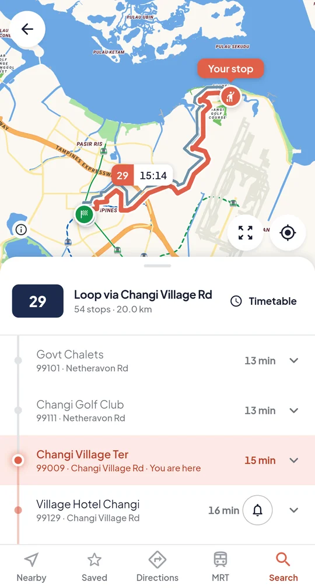
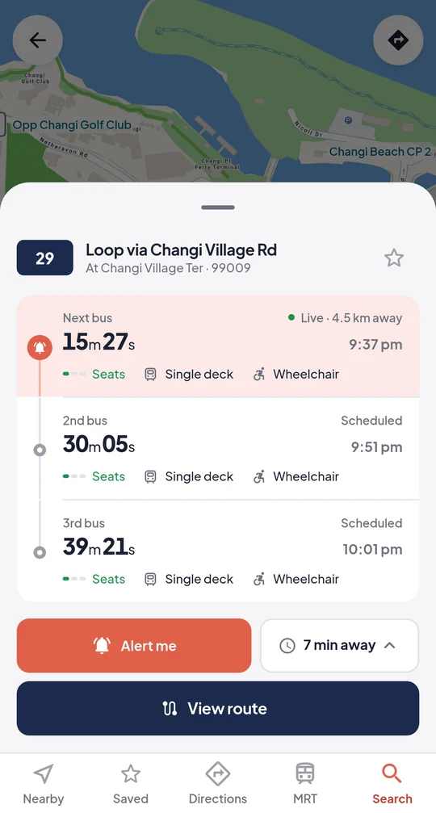
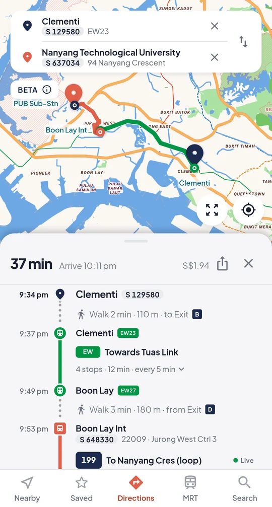
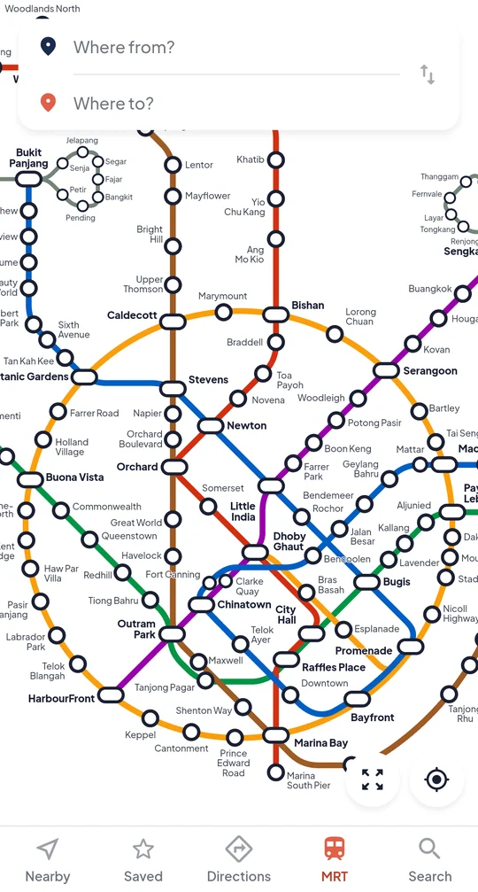

Never miss your stop again.
Live bus timings, MRT routes, and an alert before your stop, even with your phone locked. Free, no sign-up.
Join the free beta
On iPhone and Android


Bus timings, to the second
Every bus counts down live, so you know whether to walk or run.
- How full each bus is
- Double-decker and wheelchair access
- Your favourite buses first

Bus and MRT directions
Door to door, with live bus times built in. See when to leave, where to board and what it costs.
- Leave now, leave at, or arrive by
- Fares shown up front
- Home and Work one tap away

The whole MRT and LRT map
Every line and station in one clear map, even without a signal. Plan a trip right from it.

Also in JioTransit
- Bus alertsA ping when your bus is nearly at the stop.
- Home screen widgetsYour usual stop's buses, without opening the app.
- Search anythingStop codes, roads, bus numbers, landmarks. Even “Bt Batok”.
- TimetablesFirst and last buses, and how often they come.
- Four languagesEnglish, 中文, Bahasa Melayu and தமிழ்.
- Light and darkEasy on the eyes for late rides home.
Try it before it launches.
The beta is free on iPhone and Android.